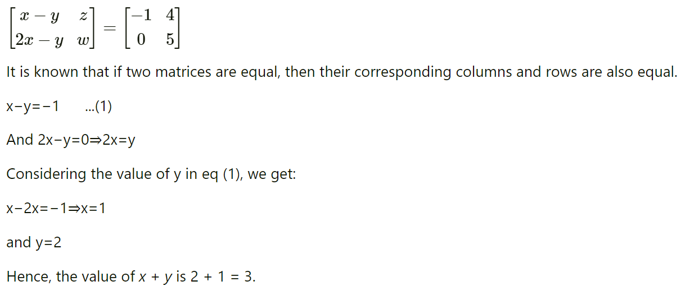
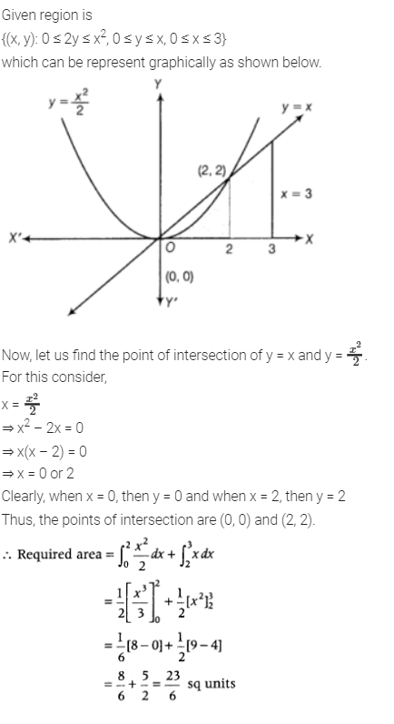

Chapter 1: Relations and Functions
Topic 1: Relations
1 Mark Questions
Q1- A relation R in a set A is called __________, if (a1, a2) ∈ R implies (a2, a1) ∈ R, for all a1, a2 ∈ A. (65/1 2019) (65/3 2019)
Solution- Symmetric
Q2- Assertion (A) : The number of onto functions from a set P containing 5 elements to a set Q containing 2 elements is 30.
Reason (R) : Number of onto functions from a set containing m elements to a set containing n elements is nm. (65/2 2023) (65/3 2023)
Solution- Assertion is True, Reason is False
4 Marks Questions
Q1- Let N be the set of natural numbers and R be the relation on N x N defined by (a, b) R (c, d) iff ad = bc for all a, b, c, d ∈ N. Show that R is an equivalence relation. (65/2 2022) (65/3 2022)
Solution-
5 Marks Questions
Q1-A relation R is defined on a set of real numbers as R = {(x, y) : x . y is an irrational number}. Check whether R is reflexive, symmetric and transitive or not. (65/1 2023) (65/2 2023)
Solution-
6 Marks Questions
Q1-Let N denote the set of all natural numbers and R be the relation on N × N defined by: (a, b) R (c, d) if ad(b + c) = bc(a + d). Show that R is an equivalence relation. (65/1 2015) (65/2 2016)
Solution-
Q2- Let A = {x ∈ Z : 0 <= x <= 12}. Show that R = {(a, b) : a, b ∈ A, |a – b| is divisible by 4} is an equivalence relation.
Find the set of all elements related to 1. Also write the equivalence class [2]. (65/1 2017) (65/3 2017)
Solution- 
Q3- Show that the function f : R -> R defined by f(x) = x/x2+1, x ∈ R is neither one-one nor onto.
Also, if g : R -> R is defined as g(x) = 2x – 1, find fog(x). (65/1 2018) (65/3 2018)
Solution- 
Topic 2: Functions
1 Mark Questions
Q1- If R = {(x, y) : x + 2y = 8} is a relation on N, write the range of R. (65/1 2013) (65/2 2013)
Solution- 
Q2- If a * b denotes the larger of ‘a’ and ‘b’ and if a o b = (a * b) + 3, then write the value of (5) o (10), where * and o are binary operations. (65/1 2017) (65/2 2017)
Solution- (5) o (10) = (5 * 10) + 3 = 10 + 3 = 13
2 Marks Questions
Q1- If the function f : R -> R be given by f(x) = x2 + 2 and g : R -> R be given by g(x) = x/x-1, x ≠ 1, find fog and gof and hence find fog(2) and gof (– 3). (65/1 2014) (65/2 2014)
Solution- 
Q2- (65/1 2020) (65/2 2020)
Solution-
Q3- A function f : A -> B defined as f(x) = 2x is both one-one and onto. If A = {1, 2, 3, 4}, then find the set B. (65/1 2021) (65/2 2021)
Solution- f(1) = 2, f(2) = 4, f(3) = 6, f(4) = 8
So, B = {2, 4, 6, 8}
Chapter 2: Inverse Trigonometric Functions
Topic 1: Inverse Trigonometric Functions
1 Marks Questions
Q1- If tan–1x + tan–1y = π/4, xy < 1, then write the value of x + y + xy. (65/2 2014) (65/3 2014)
Solution- 
Q2- Find the value of tan–1√3 – cot–1(–√3). (65/2 2018) (65/3 2018)
Solution- π/3 - ( π - π/6 = - π/2
Q3- Find the value of tan–1√3 – cot–1(–√3). (65/2 2019) (65/3 2019)
Solution- π/3 - ( π - π/6 = - π/2
Q4- The principal value of cos-1 ( cos 13π/6) is (65/2 2020) (65/3 2020)
(a) 13π/6
(b) π/2
(c) π/3
(d) π/6
Solution- (d)
2 Marks Questions
Q1- (65/2 2013) (65/3 2013)
Solution-
Q2- (65/3 2022) (65/1 2022)
Solution- 
Q3- (65/3 2021) (65/1 2021)
Solution- Required value = π/4 + 3π/4 + π/4
= 5π/4
4 Marks Questions
Q1- If sin [cot–1 (x + 1)] = cos(tan–1x), then find x. (65/2 2015) (65/3 2015)
Solution-
Q2- If (tan–1x)2 + (cot–1x)2 = 5π/8, then find x. (65/3 2016) (65/1 2016)
Solution- 
Q3- If sin (sin-11/5 + cos-1x) = 1, then find the value of x. (65/2 2023) (65/3 2023)
Solution-
Chapter 3: Matrices
Topic 1: Operations on Matrices
1 Marks Questions
Q1-
Solution-

Q2- (65/1 2021) (65/3 2021)
Solution- (c) ± 5
Q3- (65/1 2022) (65/3 2022) 
Solution- (b)
4 Marks Questions
Q1- (65/1 2015) (65/2 2015) (65/1 2016)
Solution- 
Q2- If A is a square matrix such that A2 = A, then (I – A)3 + A is equal to? (65/1 2019) (65/2 2019)
Solution-
(I − A)3 + A = (I − A)2(I − A) + A
= I2 − 2AI + A2 (I − A) + A
= (I − 2A + A)(I − A) + A
= (I − A)(I − A) + A
= (I − A)2 + A
= I2 − 2AI + A2 + A
= I − 2A + A + A
= I
Topic 2: Symmetric and Skew Symmetric Matrices
1 Mark Questions
Q1- (65/2 2017) (65/3 2018) 
Solution- a = –2, b = 3
Q2- A square matrix A is said to be symmetric if ____________ . (65/1 2020) (65/2 2020)
Solution- A = A′
Topic 3: Elementary Operation (Transformation) of a Matrix
6 Marks Questions
Q1- (65/1 2016) (65/3 2023) 
Solution- 
Chapter 7: Integrals
Topic 1: Integration as an Inverse Process of Differentiation
1 Mark Questions
Q1- Find ∫sin6xcos8x dx. (65/1, 2014)(65/2, 2014)(65/3, 2014)
Solution- 
Q2- Find ∫cos-1(sin x) dx. (65/1, 2014)(65/2, 2014)
Solution- 
Q3- Write the anti-derivative of (3√x + 1/√x) (65/1, 2014)(65/2, 2014)
Solution-
Q4- Find ∫sin3x+cos3x/sin2xcos2x dx (65/1, 2019)(65/2, 2019)
Solution-
Q5- Find ∫sec2x/√tan2x+4 dx.
(65/3, 2019)
Solution- 
Q6- Find: ∫ √1−sin2x dx, π/4 < x < π/2
(65/1, 2019)(65/2, 2019)(65/3, 2019)
Solution- 
Q7- Evaluate ∫cos2x+2sin2x/cos2x dx
(65/2, 2018)
Solution- 
Q8- Find: ∫3−5sinx/cos2x dx
(65/1, 2018)(65/2, 2018)(65/3, 2018)
Solution- Let I = ∫3−5sinx/cos2x dx
= ∫(3/cos2x−5sinx/cos2x) dx
= 3 ∫sec2x dx – 5 ∫ sec x tan x dx
= 3tanx – 5secx + C
Topic 2: Integrals of Some Particular Functions
1 Mark Questions
Q1- Find ∫dx/(x2+4x+8) (65/1, 2017)(65/2, 2017)
Solution- 
Q2- Find ∫dx/(5−8x−x2) (65/3, 2017)
Solution- 
Q3- Evaluate ∫(3 – 2x)√2+x−x2 dx (65/1, 2015, 65/2, 2015, 65/3, 2015)
Solution- 2/3(2+x-x2)3/2 + (2x-1)/2 √2+x−x2 + 9/4 sin-1(2x-1)/3 + C
2 Marks Questions
Q1- Find: ∫3x+5/x2+3x−18 dx (65/1, 2019)(65/2, 2019)(65/3, 2019)
Solution- 
Q2- Find the value of ∫cosx/(1+sinx)(2+sinx) dx (65/2, 2019)
Solution- 
Q3- Find ∫x22+x+1/(x+2)(x2+1) dx (65/2, 2019)(65/3, 2019)
Solution- 
Q4- Find ∫4/(x−2)(x2+4) dx (65/1, 2018)(65/2, 2018)(65/3, 2018)
Solution- 
Q5- Find ∫(3sinθ−2)cosθ/5−cos2θ−4sinθ dθ (65/1, 2016)(65/2, 2016)(65/3, 2016)
Solution-
Q6- Find ∫√x/√a3−x3dx (65/1, 2016)
Solution- 
Q7- Find ∫(x2+1)ex(x+1)2 dx (65/1, 2020)(65/2, 2020)(65/3, 2020)
Solution-
3 Marks Questions
Q1- Find ∫(x + 3)√(3−4x−x2) dx (65/3, 2016)
Solution-
First, use the method for integral of the form
∫(px + q)√ax2+bx+c dx,
consider (px + q) = A d/dx (ax2 + bx + c) + B,
simplify and get the values of A and B.
Further, simplify the integrand and use the formula
∫√a2−x2dx = [1/2x√a2−x2+a2/2sin-1(xa)+C]
Let I = ∫(x + 3) √3−4x−x2 dx
Given integral is the form of
∫ (px + q) ax2+bx+c−−−−−−−−−−√ dx
Let (x + 3) = A d/dx (3 – 4x – x2) + B
⇒ x + 3 = A(- 4 – 2x) + B
⇒ x + 3 = (- 4A + B) – 2Ax
On comparing the coefficients of x and constant terms, we get
– 2A = I
⇒ A = – 12
and – 4A + B = 3 ⇒ 2 + B = 3 ⇒ B = 1 …….. (1)
Thus. (x + 3) = – 12 (- 4 – 2x) + 1 [from Eq. (1)]
Now, given integral becomes
I=--4-2x)√3-4x-x²dx + √3-4x-x² dx...(ii)
I = I1+ I2 (say)
Now, consider
I1 = 1/2(-4-2x)√3-4x-x² dx
Put
3-4x-x² 2=t
(-4-2x)dx = dt =-√id=x²+C1 dt 2 3 =-1/3-4x-x22+C1
and
I2 = √3-4x-x² dx = √(x² + 4x - 3) dx = √(x²+2x2x+4-4-3) dx = [√-{(x+2)²-7}dx =√7-(x+2)² dx = √(√7)² - (x + 2)2dx =(x+2)√3-4x-x²+7sin(x+2)]+ 1 [√a²-x² dx = x√a²-x² +a2sin()]+c +C
Now, from Eq. (ii), we have I = -1/3 (3-4x-x2)2+(x+2)3-4x-x² 3 2 +sin()+c
where, C = C₁+ C2.
Q2- Evaluate ∫1/cos4x+sin3x dx
Solution- 
5 Marks Questions
Q1- Integrate w.r.t. x, x2−3x+1/√1−x2
Solution- 
Topic 3: Integration by Partial Fractions
2 Marks Questions
Q1- Find ∫x3/x4+3x2+2
Solution-
3 Marks Questions
Q1- Find ∫log|x|(x+1)2 dx (65/1, 2020)(65/2, 2020)(65/3, 2020)
Solution- 
5 Marks Questions
Q1- Find ∫dx/sinx+sin2xdx (65/1, 2015)
Solution- First, simplify the integrand in such a form that numerator is in sin form and denominator is in cos form, Substitute cos x = t and then convert the given integrand in the form of t.
Now, use partial traction in the integrand and then integrate it. Further, substitute the value oft and get the required result.

Q2-
Topic 3: Definite Integrals
1 Mark
Q1- Evaluate ∫323xdx
Solution- ∫323xdx = (3x/log3)32
= 1/ log 3 [3x]32 = 1/log 3 [33 - 32]
= 1/log 3 (27-9) = 18/log 3
Q2- Evaluate ∫π/40tanx dx.
Solution- ∫π/40tanxdx = [log|sec x|]π/40
= log|sec π/4| - log|sec 0|
= 1/2 log 2
3 Marks
Q1- Evaluate ∫∞1 ( |x – 1| + |x – 2| + |x – 4|) dx
Solution- 
Topic 4: Evolution of Definite Integrals by Substitution
1 Mark
Q1- Evaluate ∫10xex2 dx
Solution- Let I = ∫10xex2 dx
Put x2 = t => 2xdx = dt => dx = dt/2x
Q2- Evaluate ∫42x/x2+1 dx
Solution-
Q3- Evaluate ∫30dx/9+x2
Solution-
Q4- Evaluate ∫10tan-1x/1+x2 dx
Solution-
2 Marks
Q1- If ∫a01/4+x2dx=π/8, then find the value of α
Solution-
Q2- If f(x) = ∫x0tsintdt, then write the value of f’ (x)
Solution-
Topic 5: Some Properties of Definite Integrals/h3>
1 Mark Questions
Q1- Evaluate ∫2-1|x|/x dx
Solution- 
3 Marks
Q1- Prove that ∫a0f(x)dx = ∫a0f(a−x) dx, hence evaluate ∫pi0xsinx/1+cos2x dx
Solution-
Q2- Prove that ∫a0f(x)dx = ∫a0f(a−x) dx, hence evaluate ∫pi/20x/sinx+cosx dx
Solution-
Chapter 8: Application of Integrals
Topic 1: Area under Simple Curves
1 Mark
Q1- Using integration, find the area of ∆ ABC, the coordinates of whose vertices are A (2, 5), B(4, 7) and C(6, 2).
Solution-
Q2- Using integration, find the area of triangle whose vertices are (2, 3), (3, 5) and (4, 4)
Solution- 3/2 sq units
Q3- Using integration, find the area of the triangular region whose vertices are (2, – 2), (4, 3) and (1, 2).
Solution- 13/2 sq units
Q4- Using integration, find the area of the region in the first quadrant enclosed by the X-axis, the line y = x and the circle x2 + y2 = 18.
Solution- 9π/4 sq units
Q5- Using integration, find the area of ∆ PQR, coordinates of whose vertices are P(2, 0), Q(4, 5) and R (6, 3).
Solution- 7 sq units
Q6- Using integration, find the area of the region bounded by the triangle whose vertices are (- 1, 2), (1, 5) and (3, 4).
Solution- 4 sq units
2 Marks
Q1- Using integration, find the area of the triangular region whose sides have the equations y = 2x + 1, y = 3x + 1 and x = 4.
Solution-
Q2- Using integration, find the area of the region bounded by the curves y = |x + 1| + 1, x = – 3, x = 3 and y = 0.
Solution-
Q3- Using integration, find the area of the region bounded by the lines 2x + y = 4, 3x – 2y = 6 and x – 3y + 5 = 0.
Solution-
3 Marks
Q1- Using integration, find the area of the region : {(x, y): 0 ≤ 2y ≤ x2, 0 ≤ y ≤ x, 0 ≤ x ≤ 3}
Solution-

Q2- Find the area bounded by the circle x2 + y2 = 16 and the line √3y = x in the first quadrant, using integration.
Solution-
Q3- Using the method of integration, find the area of the ∆ABC, coordinates of whose vertices are A (4, 1), B(6, 6) and C (8, 4).
Solution- 
Q4- Using integration, find the area of the region in the first quadrant enclosed by the Y-axis, the line y = x and the circle x2 + y2 = 32.
Solution-
Q5- Using integration, find the area of the following region.{(x,y):x2/9+y2/4≤1≤x/3+y/2}
Solution-
5 Marks
Q1- Using integration, find the area of the triangle formed by positive X-axis and tangent and normal to the circle x2 + y2 = 4 at (1, √3).
Solution-
Topic 2: Area Between Two Curves
3 Marks
Q1- Find the area of the region lying above X-axis and included between the circle x2 + y2 = 8x and inside the parabola y2 = 4x
Solution-
Q2- Using integration, prove that the curves y2 = 4x and x2 = 4y divide the area of the square bounded by x = 0, x = 4, y = 4 and y = 0 into three equal parts
Solution- 
Q3- Using integration, find the area of the region enclosed between the two circles x2 + y2 = 4 and (x – 2)2 + y2 = 4.
Solution-
Q4- Using integration, find the area of the region{(x, y): x2 + y ≤ 2ax, y2 ≥ ax;x, y ≥ 0}.
Solution-
Q5- Find the area of the region {(x, y): y2 ≤ 4x, 4x2 + 4y2 ≤ 9}, using method of integration
Solution-
5 Marks
Q1- Using integration, find the area of the region bounded by the curves y = √4−x2, x2 + y2 – 4x = 0 and the x-axis.
Solution-
Chapter 9: Differential Equations
Topic 1: General and Particular Solutions of a Differential Equation
1 Mark
Q1- Find the order and the degree of the differential equation. x2d2y/dx2={1+(dy/dx)2}4
Solution- Since, highest order derivative occurring in the differential equation is d2y/dx2 therefore order is 2 and as given equation can be expressed as a polynomial in derivatives so its degree is 1, which is the power of d2ydx2
Q2- Write the order and degree of the differential equation. (Delhi 2019, 2013) x3(d2ydx2)2+x(dy/dx)4 = 0
Solution- Order = 2 and degree = 2
Q3- Find the order and degree (if defined) of the differential equation. d2y/dx2+x(dy/dx)2=2x2log(d2y/dx2)
Solution- Since highest order derivative Occuring in the differential equation is d2y/dx2 therefore order is 2 and as the differential equation is not a polynomial in derivatives, therefore its degree is not defined.
Q4- Find the differential equation representing the family of curves y = ae2x + 5 constant.
Solution- Given, y = ae2x + 5 ………(i)
Differentiating w.r.t x, we get
y’ = ae2x . 2 ⇒ ae2x = y′/2 ⇒ y – 5 = y′/2 [From Eq. (i)]
⇒ 2y – 10 = y’ ⇒ y’ – 2y + 10 = 0
Which is the required equation.
Q5- Write the sum of the order and degree of the differential equation d/dx{(dy/dx)3} = 0
Solution- The degree of the differential equation is the degree of the highest order derivative, when differential coefficients are made free from radicals and fractions sign.
Given differential equation is: d/dx{(dy/dx)3} = 0
=> 3(dy/dx)3-1d/dx(dy/dx) = 0
=> 3(dy/dx)2d2y/dx2 = 0
Here, order = 2 and degree = 1
∴ Sum of the order and degree = 2 + 1 = 3
Q6- Write the sum of the order and degree of the differential equation (d2ydx2)2+(dy/dx)3 + x4 = 0
Solution- Given differential equation is
(d2ydx2)2+(dy/dx)3 + x4 = 0
Here, we see that the highest order derivative is d2ydx2 whose degree is 2.
Here, order = 2 and degree = 2
Sum of the order and degree = 2 + 2 = 4
Q7- Write the degree of the differential equation (dy/dx)4+3xd2ydx2 = 0
Solution- Here, highest order derivative is d2y/dx2, whose degree is one. So, the degree of differential equation is 1.
Q8- Write the degree of the differential equation x(d2y/dx2)3 + y(dy/dx)4 + x4 = 0
Solution- The degree of differential equation is 3.
2 Marks
Q1- Find the differential equation representing the family of curves V = A/r + B, where A and B are arbitrary constants.
Solution-
Q2- Write the differential equation obtained by eliminating the arbitrary constant C in the equation representing the family of curves xy = C cos x
Solution- Given equation of family of curves is xy = C cos x. …(i)
On differentiating both sides w.r.t. x, we get
1 – y + xdy/dx = C (- sin x) dx
⇒ y + xdy/dx = (xycosx) sin x [from Eq. (i)]
y + x dy/dx + xy tan x = 0
Q3- Write the differential equation representing the family of curves y = mx, where m is an arbitrary constant.
Solution- Given family of curves is y = mx. …(i)
On differentiating Eq. (i) w.r.t. x, we get
dy/dx = m
On Putting m = dydx in Eq. (i), we get
y = xdy/dx
which is the required differential equation.
Q4- Form the differential equation representing the family of curves y = e2x(a + bx), where ‘a’ and ‘b’ are arbitrary constants.
Solution- Given, y = e2x(a + bx) ………(i)
On differentiating both sides w. r.t x, we get
dy/dx = e2xd/dx(a + bx) + (a + bx) d/dxe2x
⇒ dy/dx = e2x (b) + (a + bx) .2. e2x
⇒ y’ = b. e2x + 2. e2x (a + bx)
⇒ y’ = 2y + be2x …….(ii)
Again differentiating w.r.t. x, we get
y” = 2y’ + 2be2x …(iii)
On multiplying Eq. (ii) by 2 and then subtracting from Eq. (iii), we get
y” – 2y’ = 2y’ – 4y
y” = 2y’ + 2y’ – 4y
y”- 4y’+ 4y = 0,
which is the required equation.